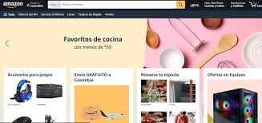
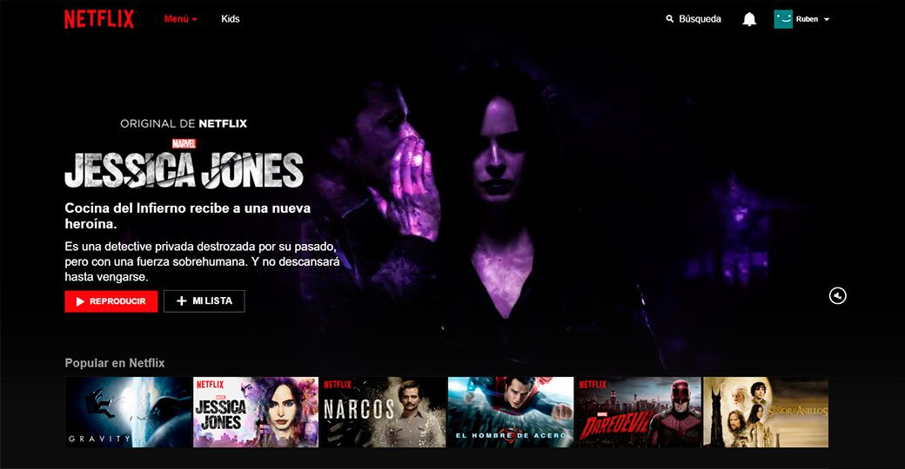

Mi proyecto Facebook
Facebook es la red social más popular del mundo, diseñada para conectar personas. Permite compartir fotos, videos, mensajes y experiencias con amigos y familiares. Su plataforma incluye herramientas para negocios, eventos y comunidades, convirtiéndose en un espacio integral de interacción social y profesional.

Mi proyecto Netflix
Netflix es el servicio de streaming líder a nivel global, ofreciendo una amplia variedad de series, películas, documentales y contenido original. Con opciones de personalización, recomendaciones basadas en gustos y disponibilidad en múltiples dispositivos, se ha consolidado como una opción ideal para el entretenimiento en cualquier momento.
Mi proyecto Amazon
Amazon es la plataforma de comercio electrónico más grande, conocida por su extenso catálogo de productos, precios competitivos y envíos rápidos. También ofrece servicios como Amazon Prime, streaming de video, música y almacenamiento en la nube, revolucionando la forma en que las personas compran y disfrutan contenido digital.